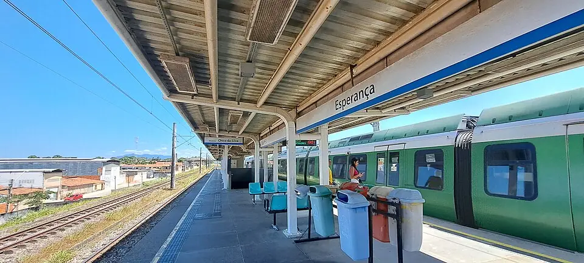

Linha Sul
Sentido Carlito Benevides
| Primeiro | Último | |
|---|---|---|
| Segunda a sexta | 06:04 | 23:42 |
| Sábado | 06:04 | 17:32 |
| Domingo | sem operação (só em dias especiais) | |
Nos dias úteis, passa a cada ~18 min no pico, ~22 min no resto do dia.
Carregando os horários de hoje…

Fotos do Wikimedia Commons (reduzidas para o site), de quem fotografou e liberou o uso. Toque no nome para ver a original.
Linha Sul
| Primeiro | Último | |
|---|---|---|
| Segunda a sexta | 06:04 | 23:42 |
| Sábado | 06:04 | 17:32 |
| Domingo | sem operação (só em dias especiais) | |
Nos dias úteis, passa a cada ~18 min no pico, ~22 min no resto do dia.
Linha Sul
| Primeiro | Último | |
|---|---|---|
| Segunda a sexta | 05:46 | 23:34 |
| Sábado | 05:46 | 17:20 |
| Domingo | sem operação (só em dias especiais) | |
Nos dias úteis, passa a cada ~18 min no pico, ~22 min no resto do dia.
Em feriado, eleição, ENEM e eventos o Metrofor costuma mudar o horário: as próximas partidas acima já mostram o aviso quando há operação especial anunciada.
Linha Sul › · 13ª de 20 estações
🛗1Elevador
↗não temRampa
⇅não temEscada rolante
🪜2Escada
Dados do Metrofor. Um elevador pode estar parado para manutenção.
Todos os metrôs e VLTs têm espaço para cadeira de rodas. Encontrou algo diferente? Conte pelo WhatsApp.
2 lugares a até 1 km a pé, pelas ruas.